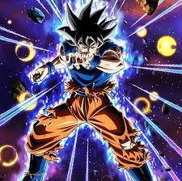

|  | Son Gokū (孫そん 悟空ごくう?) es un personaje ficticio, protagonista de la serie de manga y anime Dragon Ball. Fue creado por Akira Toriyama en 1984. Al comienzo de la historia, Gokū aparece como un niño que practica las artes marciales y que posee una cola de mono y una fuerza sobrehumana |